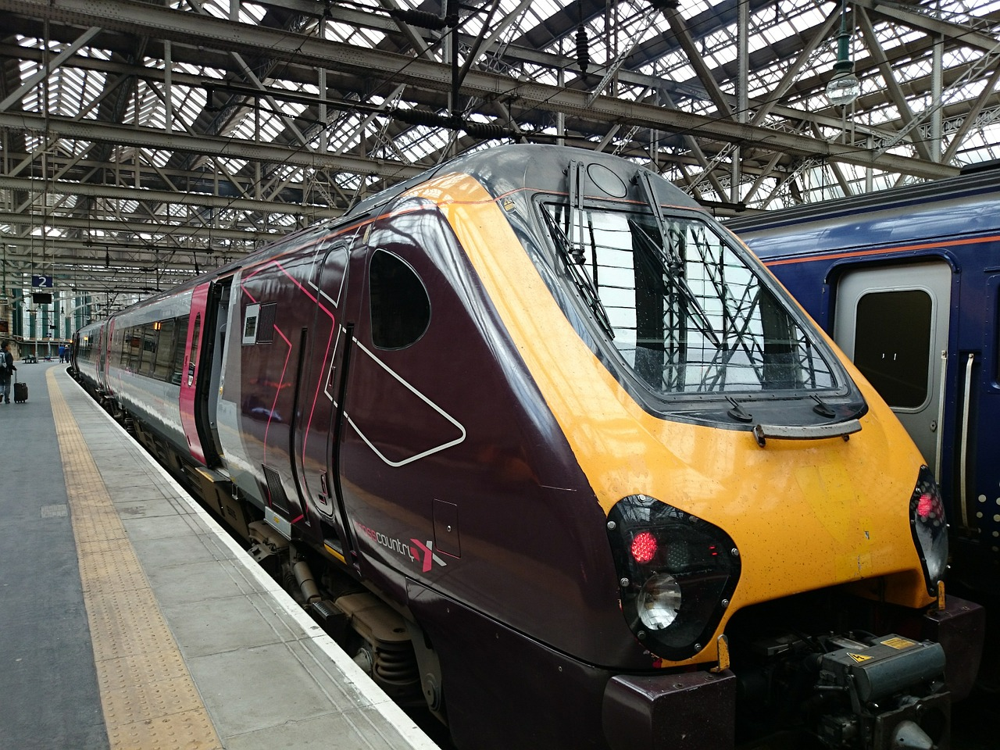
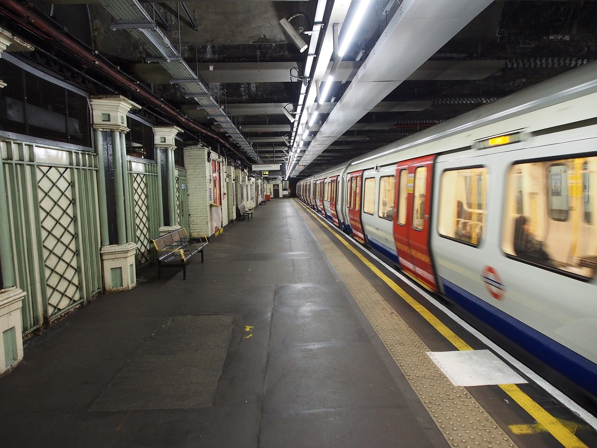
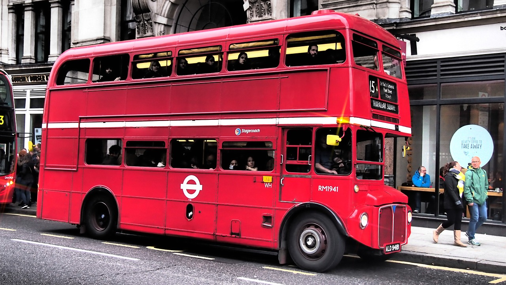
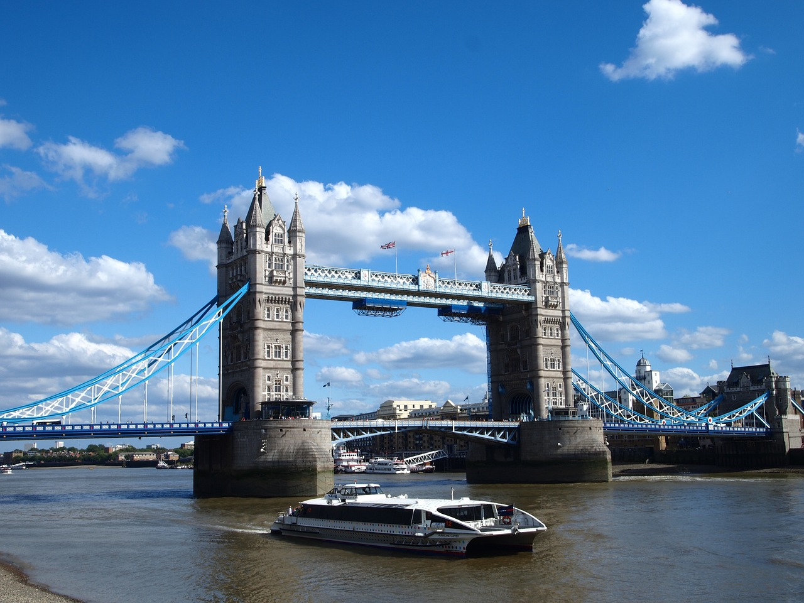

Horaires du Tower Bridge
Tout les jours : de 9h30 à 18h.
- Quand ferme le Tower Bridge ?
- Le Tower Bridge est fermé du 24 au 26 décembre.
- Combien de temps dure la visite du Tower Bridge ?
- Il vous faudra 1 heure pour explorer le Tower Bridge.
- Quel est le meilleur moment pour visiter le Tower Bridge à Londres ?
- Pour éviter la foule, visitez le Tower Bridge tôt le matin ou tard l'après-midi.
Comment s'y rendre
Situé dans le centre de Londres, le Tower Bridge est accessible par plusieurs modes de transport.

En train
La station London Bridge est la plus proche du Tower Bridge. Sortez de la gare sur Tooley Street et marchez 10 minutes pour arriver au pont. La gare ferroviaire nationale de Fenchurch Street ou la station Tower Gateway DLR sont les autres stations les plus proches du Tower Bridge.
Si le temps le permet et que vous êtes d'humeur à vous promener, vous pouvez descendre aux stations Blackfriars, Cannon Street ou City Thameslink.

En métro
Pour vous rendre au Tower Bridge, vous pouvez prendre la ligne District ou Circle et descendre à la station Tower Hill. De là, le Tower Bridge est à sept minutes de marche. Profitez d'un accès sans escalier du quai du métro à la rue.
Vous pouvez également prendre la ligne Northern ou Jubilee et descendre à la station London Bridge. Vous bénéficierez d'un accès sans escalier du quai du métro à la rue. Marchez ensuite 10 minutes pour arriver au pont.

En bus
Les arrêts P, K et L sont les stations de bus les plus proches, à seulement 3 minutes de marche du Tower Bridge. Les lignes de bus 42, 78, 15, 100 et 343 circulent dans cette direction.
Si vous espérez faire un peu de tourisme en chemin, montez dans un bus hop-on-hop-off. L'arrêt le plus proche est Tooley Street, soit l'arrêt 15 de la ligne rouge. De là, le Tower Bridge n'est qu'à 5 minutes.

En bateau
Explorez Londres différemment en vous rendant au Tower Bridge sur un bateau à aubes. Vous avez la possibilité de descendre à Tower Pier, qui se trouve sur le côté nord du pont, ou à London Bridge City Pier, sur le côté sud du fleuve.
Depuis le Tower Pier, le Tower Bridge est à 6 minutes de marche, tandis que depuis le London City Bridge Pier, il est à 8 minutes de marche.